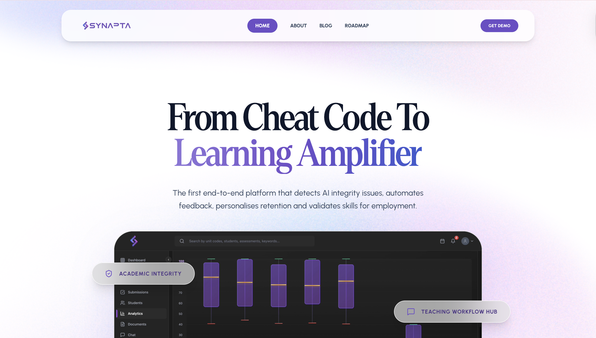

Internship · 2026
Synapta Website
Designed and built the company's production website from scratch as a Software Development Intern. Led frontend development, established branding and style guide, and delivered a production-ready responsive web application.
ReactTypeScriptViteDockerBranding
